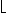
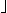

![[Front]](images/OpenGL3.gif)
![[Reference]](../buttons/ReferenceOff.gif)
![[Imp. Guide]](../buttons/ImpGuideOff.gif)
![[Index]](../buttons/IndexOff.gif) glDrawPixels: write a block of pixels to the frame buffer.
glDrawPixels: write a block of pixels to the frame buffer.
C Specification |
Parameters |
Description |
Errors |
Associated Gets |
See Also
void glDrawPixels(
GLsizei width,
GLsizei height,
GLenum format,
GLenum type,
const GLvoid *pixels)
- width, height
- Specify the dimensions of the pixel rectangle to be written into the frame
buffer.
- format
- Specifies the format of the pixel data. Symbolic constants
GL_COLOR_INDEX, GL_STENCIL_INDEX,
GL_DEPTH_COMPONENT, GL_RGBA,
GL_RED, GL_GREEN, GL_BLUE,
GL_ALPHA, GL_RGB,
GL_LUMINANCE, and GL_LUMINANCE_ALPHA are
accepted.
- type
- Specifies the data type for pixels. Symbolic constants
GL_UNSIGNED_BYTE, GL_BYTE,
GL_BITMAP, GL_UNSIGNED_SHORT,
GL_SHORT, GL_UNSIGNED_INT,
GL_INT, and GL_FLOAT are accepted.
- pixels
- Specifies a pointer to the pixel data.
glDrawPixels reads pixel data from memory and writes it into the
frame buffer relative to the current raster position. Use glRasterPos to set the current raster
position; use glGet with argument
GL_CURRENT_RASTER_POSITION to query the raster position.
Several parameters define the encoding of pixel data in memory and control the
processing of the pixel data before it is placed in the frame buffer. These
parameters are set with four commands: glPixelStore, glPixelTransfer, glPixelMap, and glPixelZoom. This reference page
describes the effects on glDrawPixels of many, but not all, of the
parameters specified by these four commands.
Data is read from pixels as a sequence of signed or unsigned
bytes, signed or unsigned shorts, signed or unsigned integers, or
single-precision floating-point values, depending on type.
Each of these bytes, shorts, integers, or floating-point values is interpreted
as one color or depth component, or one index, depending on
format. Indices are always treated individually. Color
components are treated as groups of one, two, three, or four values, again
based on format. Both individual indices and groups of
components are referred to as pixels. If type is
GL_BITMAP, the data must be unsigned bytes, and
format must be either GL_COLOR_INDEX or
GL_STENCIL_INDEX. Each unsigned byte is treated as eight
1-bit pixels, with bit ordering determined by
GL_UNPACK_LSB_FIRST (see glPixelStore).
width height pixels are read from memory, starting at
location pixels. By default, these pixels are taken from
adjacent memory locations, except that after all width pixels
are read, the read pointer is advanced to the next four-byte boundary. The
four-byte row alignment is specified by glPixelStore with argument
GL_UNPACK_ALIGNMENT, and it can be set to one, two, four, or
eight bytes. Other pixel store parameters specify different read pointer
advancements, both before the first pixel is read and after all
width pixels are read. See the glPixelStore reference page for details
on these options.
height pixels are read from memory, starting at
location pixels. By default, these pixels are taken from
adjacent memory locations, except that after all width pixels
are read, the read pointer is advanced to the next four-byte boundary. The
four-byte row alignment is specified by glPixelStore with argument
GL_UNPACK_ALIGNMENT, and it can be set to one, two, four, or
eight bytes. Other pixel store parameters specify different read pointer
advancements, both before the first pixel is read and after all
width pixels are read. See the glPixelStore reference page for details
on these options.
The widthheight pixels that are read from memory are each
operated on in the same way, based on the values of several parameters
specified by glPixelTransfer and
glPixelMap. The details of these
operations, as well as the target buffer into which the pixels are drawn, are
specific to the format of the pixels, as specified by format.
format can assume one of eleven symbolic values:
- GL_COLOR_INDEX
- Each pixel is a single value, a color index. It is converted to
fixed-point format, with an unspecified number of bits to the right of the
binary point, regardless of the memory data type. Floating-point values
convert to true fixed-point values. Signed and unsigned integer data is
converted with all fraction bits set to 0. Bitmap data convert to either
0 or 1.
Each fixed-point index is then shifted left by
GL_INDEX_SHIFT bits and added to
GL_INDEX_OFFSET. If GL_INDEX_SHIFT is
negative, the shift is to the right. In either case, zero bits fill
otherwise unspecified bit locations in the result.
If the GL is in RGBA mode, the resulting index is converted to an RGBA
pixel with the help of the GL_PIXEL_MAP_I_TO_R,
GL_PIXEL_MAP_I_TO_G, GL_PIXEL_MAP_I_TO_B,
and GL_PIXEL_MAP_I_TO_A tables. If the GL is in color
index mode, and if GL_MAP_COLOR is true, the index is
replaced with the value that it references in lookup table
GL_PIXEL_MAP_I_TO_I. Whether the lookup replacement of
the index is done or not, the integer part of the index is then
anded with 2b  1, where b is the number
of bits in a color index buffer.
1, where b is the number
of bits in a color index buffer.
The GL then converts the resulting indices or RGBA colors to fragments
by attaching the current raster position z coordinate and
texture coordinates to each pixel, then assigning x and y
window coordinates to the nth fragment such that
xn = xr +
n mod width
yn = yr +

n/width

where (xr, yr) is the
current raster position. These pixel fragments are then treated just like
the fragments generated by rasterizing points, lines, or polygons.
Texture mapping, fog, and all the fragment operations are applied before
the fragments are written to the frame buffer.
- GL_STENCIL_INDEX
- Each pixel is a single value, a stencil index. It is converted to
fixed-point format, with an unspecified number of bits to the right of the
binary point, regardless of the memory data type. Floating-point values
convert to true fixed-point values. Signed and unsigned integer data is
converted with all fraction bits set to 0. Bitmap data convert to either
0 or 1.
Each fixed-point index is then shifted left by
GL_INDEX_SHIFT bits, and added to
GL_INDEX_OFFSET. If GL_INDEX_SHIFT is
negative, the shift is to the right. In either case, zero bits fill
otherwise unspecified bit locations in the result. If
GL_MAP_STENCIL is true, the index is replaced with the
value that it references in lookup table
GL_PIXEL_MAP_S_TO_S. Whether the lookup replacement of
the index is done or not, the integer part of the index is then
anded with 2b 1, where b is the number
of bits in the stencil buffer. The resulting stencil indices are then
written to the stencil buffer such that the nth index
is written to location
xn = xr +
n mod width
yn = yr +
n/width
where (xr, yr) is the
current raster position. Only the pixel ownership test, the scissor test,
and the stencil writemask affect these write operations.
- GL_DEPTH_COMPONENT
- Each pixel is a single-depth component. Floating-point data is converted
directly to an internal floating-point format with unspecified precision.
Signed integer data is mapped linearly to the internal floating-point
format such that the most positive representable integer value maps to
1.0, and the most negative representable value maps to 1.0. Unsigned integer data is mapped
similarly: the largest integer value maps to 1.0, and 0 maps to 0.0. The
resulting floating-point depth value is then multiplied by by
GL_DEPTH_SCALE and added to GL_DEPTH_BIAS.
The result is clamped to the range [0, 1].
The GL then converts the resulting depth components to fragments by
attaching the current raster position color or color index and texture
coordinates to each pixel, then assigning x and y window
coordinates to the nth fragment such that
xn = xr +
n mod width
yn = yr +
n/width
where (xr, yr) is the
current raster position. These pixel fragments are then treated just like
the fragments generated by rasterizing points, lines, or polygons.
Texture mapping, fog, and all the fragment operations are applied before
the fragments are written to the frame buffer.
- GL_RGBA
- Each pixel is a four-component group: for GL_RGBA, the red
component is first, followed by green, followed by blue, followed by
alpha. Floating-point values are converted directly to an internal
floating-point format with unspecified precision. Signed integer values
are mapped linearly to the internal floating-point format such that the
most positive representable integer value maps to 1.0, and the most
negative representable value maps to 1.0. (Note that this mapping does not convert 0 precisely to 0.0.)
Unsigned integer data is mapped similarly: the largest integer value maps
to 1.0, and 0 maps to 0.0. The resulting floating-point color values are
then multiplied by GL_c_SCALE and
added to GL_c_BIAS, where c
is RED, GREEN, BLUE, and ALPHA for the
respective color components. The results are clamped to the range
[0, 1].
If GL_MAP_COLOR is true, each color component is scaled
by the size of lookup table
GL_PIXEL_MAP_c_TO_c, then
replaced by the value that it references in that table. c is
R, G, B, or A respectively.
The GL then converts the resulting RGBA colors to fragments by
attaching the current raster position Z coordinate and texture coordinates
to each pixel, then assigning x and y window coordinates to
the nth fragment such that
xn = xr +
n mod width
yn = yr +
n/width
where (xr, yr) is the
current raster position. These pixel fragments are then treated just like
the fragments generated by rasterizing points, lines, or polygons.
Texture mapping, fog, and all the fragment operations are applied before
the fragments are written to the frame buffer.
- GL_RED
- Each pixel is a single red component. This component is converted to the
internal floating-point format in the same way the red component of an
RGBA pixel is. It is then converted to an RGBA pixel with green and blue
set to 0, and alpha set to 1. After this conversion, the pixel is treated
as if it had been read as an RGBA pixel.
- GL_GREEN
- Each pixel is a single green component. This component is converted to
the internal floating-point format in the same way the green component of
an RGBA pixel is. It is then converted to an RGBA pixel with red and blue
set to 0, and alpha set to 1. After this conversion, the pixel is treated
as if it had been read as an RGBA pixel.
- GL_BLUE
- Each pixel is a single blue component. This component is converted to the
internal floating-point format in the same way the blue component of an
RGBA pixel is. It is then converted to an RGBA pixel with red and green
set to 0, and alpha set to 1. After this conversion, the pixel is treated
as if it had been read as an RGBA pixel.
- GL_ALPHA
- Each pixel is a single alpha component. This component is converted to
the internal floating-point format in the same way the alpha component of
an RGBA pixel is. It is then converted to an RGBA pixel with red, green,
and blue set to 0. After this conversion, the pixel is treated as if it
had been read as an RGBA pixel.
- GL_RGB
- Each pixel is a three-component group: red first, followed by green,
followed by blue. Each component is converted to the internal
floating-point format in the same way the red, green, and blue components
of an RGBA pixel are. The color triple is converted to an RGBA pixel with
alpha set to 1. After this conversion, the pixel is treated as if it had
been read as an RGBA pixel.
- GL_LUMINANCE
- Each pixel is a single luminance component. This component is converted
to the internal floating-point format in the same way the red component of
an RGBA pixel is. It is then converted to an RGBA pixel with red, green,
and blue set to the converted luminance value, and alpha set to 1. After
this conversion, the pixel is treated as if it had been read as an RGBA
pixel.
- GL_LUMINANCE_ALPHA
- Each pixel is a two-component group: luminance first, followed by alpha.
The two components are converted to the internal floating-point format in
the same way the red component of an RGBA pixel is. They are then
converted to an RGBA pixel with red, green, and blue set to the converted
luminance value, and alpha set to the converted alpha value. After this
conversion, the pixel is treated as if it had been read as an RGBA pixel.
The following table summarizes the meaning of the valid constants for the
type parameter:
| type |
Corresponding Type |
|---|
| GL_UNSIGNED_BYTE |
Unsigned 8-bit integer |
| GL_BYTE |
Signed 8-bit integer |
| GL_BITMAP |
Single bits in unsigned 8-bit integers |
| GL_UNSIGNED_SHORT |
Unsigned 16-bit integer |
| GL_SHORT |
Signed 16-bit integer |
| GL_UNSIGNED_INT |
Unsigned 32-bit integer |
| GL_INT |
32-bit integer |
| GL_FLOAT |
Single-precision floating-point |
The rasterization described so far assumes pixel zoom factors of 1. If glPixelZoom is used to change the
x and y pixel zoom factors, pixels are converted to fragments as
follows. If (xr, yr) is the
current raster position, and a given pixel is in the nth column and
mth row of the pixel rectangle, then fragments are generated for pixels
whose centers are in the rectangle with corners at
(xr + zoomxn,
yr + zoomy m)
(xr + zoomx (n + 1),
yr + zoomy (m + 1))
where zoomx is the value of GL_ZOOM_X and
zoomy is the value of GL_ZOOM_Y.
- GL_INVALID_VALUE is generated if either
width or height is negative.
- GL_INVALID_ENUM is generated if format or
type is not one of the accepted values.
- GL_INVALID_OPERATION is generated if
format is GL_RED,
GL_GREEN, GL_BLUE,
GL_ALPHA, GL_RGB, GL_RGBA,
GL_LUMINANCE, or GL_LUMINANCE_ALPHA, and
the GL is in color index mode.
- GL_INVALID_ENUM is generated if type is
GL_BITMAP and format is not either
GL_COLOR_INDEX or GL_STENCIL_INDEX.
- GL_INVALID_OPERATION is generated if
format is GL_STENCIL_INDEX and there is no
stencil buffer.
- GL_INVALID_OPERATION is generated if glDrawPixels is executed between the
execution of glBegin and the
corresponding execution of glEnd.
glGet with argument
GL_CURRENT_RASTER_POSITION
glGet with argument
GL_CURRENT_RASTER_POSITION_VALID
glAlphaFunc,
glBlendFunc,
glCopyPixels,
glDepthFunc,
glLogicOp,
glPixelMap,
glPixelStore,
glPixelTransfer,
glPixelZoom,
glRasterPos,
glReadPixels,
glScissor,
glStencilFunc
![[Prev]](buttons/ArrowLeftOff.gif)
![[Next]](buttons/ArrowRightOff.gif)
![[Up]](buttons/ArrowUpOff.gif) C Specification
C Specification